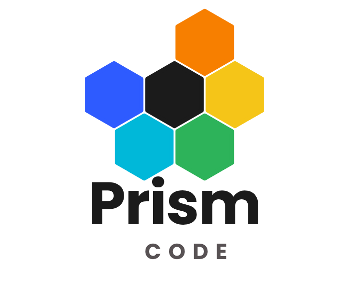

Scan to open
Point your camera. Prism Code, free, no app store.
Poster A4. Print at 100%, no scaling.
Print guidelines
- Size. Set cell radius to at least 0.9 mm (about 1.8 mm cell width). A 29-column code is then about 52 mm wide. Bigger for posters, and bigger when scanned from far away: distance of about 10 times the code width is a safe limit.
- Scaling. Turn off "fit to page" and "shrink". Print at 100%.
- Margin. Keep the white margin the file has, never crop it. Nothing within one cell of the edge.
- Colors. Print in color for the 8-color mode. Use Black and white mode when you only have a mono printer or laser on dark stock. Do not use a CMYK conversion that dulls blue and cyan. Check a test print under normal light.
- Paper. Matte white. Glossy surfaces cause glare, so use matte laminate. Curved bottles and cans work, but test first.
- Screens. Set brightness to medium or higher. Turn off night mode and color filters.
- Test. Scan the printed code with the reader before printing a batch. Print one, scan it, then print the rest.
- Logo use. Keep one cell of clear space. Do not recolor or fill the gap in the mark. Colors are in brand/README.md.
These sizes come from the project notes. Real-printer and real-phone testing is still outstanding, so treat the numbers as starting points.